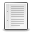

The Ideal Binary Mask (IBM) has been proposed as a computational goal for Computational Auditory Scene Analysis (CASA); a target signal is separated from the remaining signals by selectively masking interference dominated regions in a spectro-temporal representation of a mixture. Perceptual studies have demonstrated the IBM can significantly improve the intelligibility of speech for human listeners, however, results have been less promising for ASR. The field of Missing Data ASR proposes methods to compensate for the masked data. We have found, contrary to previous work, that the IBM can be used directly for ASR without missing data-based compensation methods if the final ASR features are variance normalized. In fact, the direct approach can outperform some previously proposed missing data techniques.
-

“A Direct Masking Approach to Robust ASR”
W. Hartmann, A. Narayanan, E. Fosler-Lussier, and D.L. Wang
IEEE Transactions on Audio, Speech, and Language Processing
in press, 2013 -
“ASR-Driven Binary Mask Estimation for Robust Automatic Speech Recognition”
W. Hartmann
Ph.D. dissertation, The Ohio State University, 2012 -
“Investigations into the Incorporation of the Ideal Binary Mask in ASR”
W. Hartmann and E. Fosler-Lussier
Proceedings of IEEE ICASSP, pp. 4804-4807, 2011